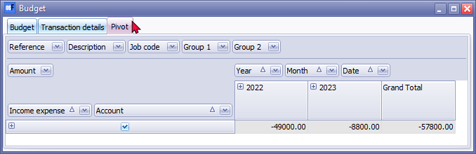
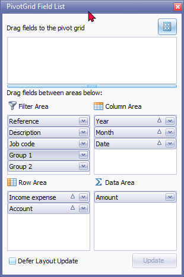
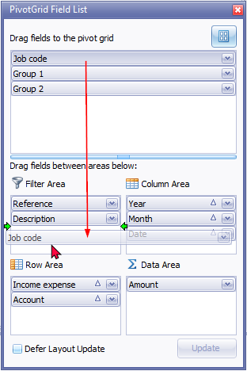
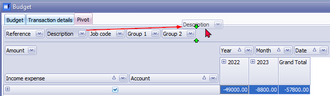
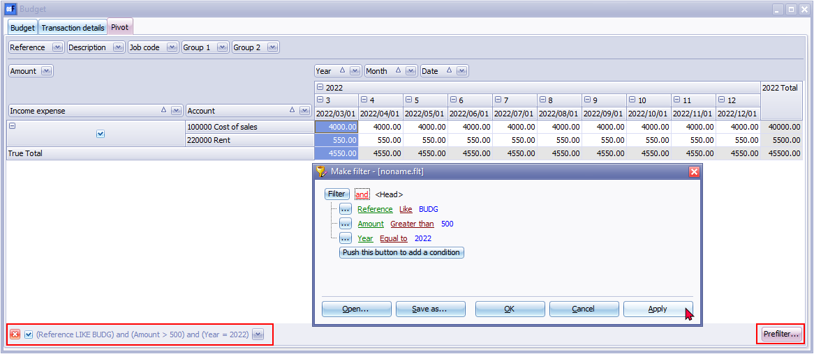

Budgets - Pivot tab (Reports ribbon)
The Pivot tab, by default, summarises the budget totals for the Income and Expense (Income statement) accounts and Capital, Assets and Liabilities (Balance sheet) accounts for which budget figures were entered for the selected period or dates.

Click on the icon to list the budget totals for the accounts. The icon will change to list totals for each account for which budget figures are entered.

The default filter options, which may be selected as needed, is structured on the Pivot screen in four (4) areas, "Filter Area, Column Area, Row Area" and "Data Area". The filter options is as follows:
Filter Area:
- Reference - The default Reference "BUDG" or your reference as entered on the options section of the Budget tab. Select the available reference(s) on the list as filter options, as required.
- Description - The default Description "Auto budget" or your description as entered on the options section of the Budget tab. Select the available description(s) on the list as filter options, as required.
- Job code - (Projects) - If budgets were entered or processed for Projects, the project code(s) may be selected as filter options.
- Group 1 - If budgets were entered entered for Cost centres (Cost centre 1), the Cost centres for Cost centre 1 may be selected as filter options.
- Group 2 - If budgets were entered entered for Cost centres (Cost centre 2), the Cost centres for Cost centre 2 may be selected as filter options.
Data Area:
- Amount - The total debit amounts a credit amounts (prefixed by a - (minus sign)) will be listed. Select the available amount(s) on the list as filter options, as required.
- Income expense - The options is as follows:
- True = Income and Expense (Income statement) accounts. The totals of the Income and Expense (Income statement) accounts will be displayed as True Total.
- False = Capital, Assets and Liabilities (Balance sheet) accounts. The totals of the Capital, Assets and Liabilities (Balance sheet) accounts will be displayed as False Total.
- Account - All accounts will be listed by Account code and description. Select the available account(s) on the list as filter options, as required.
Column Area:
- Year - The budget totals will be listed for each calendar year. For example, if your financial year starts on 1 January 2020 and ends on 31 December 2020, only one (1) financial year will be listed, i.e. 2020. In this example the financial year starts on 1 March 2020 and ends on 28 February 2021, the totals will be listed for 2020 and 2021. Select the year on the list as filter options, as required.
- Month - Period 0 to 12 will be listed if your Reporting dates are set for a 12 periods (Setup → Reporting dates (Setup ribbon), the period numbers will be listed. Select the period (month) on the list as filter options, as required.
- Date - All the dates for the selected period or dates selected on the options section of the Budget tab, will be listed. Select the available date(s) on the list as filter options, as required.
Hide Pivot grid fields
Select a Pivot grid field, right-click, and select "Hide" on the context menu. The selected Pivot grid field will be removed from the grid. For example, if you do not use Projects, you may click on the “Job code” pivot grid field, and select “Hide” on the context menu to remove “Job code” from the Pivot Filter Area.

If you do not use Cost centres, you may hide “Group 1” for Cost centre 1 and select the “Hide” option on the context menu. To hide Cost centre 2, you may repeat the process for “Group 2” to hide Cost centre 2.
The removed Pivot grid fields will not be displayed on the “Filter area” of the Pivot grid, but will be added to a list in the “Drag fields to the pivot grid” on the “PivotGrid Field List” screen.
Add hidden Pivot grid fields
If a Pivot grid field is removed accidentally, you may add the Pivot grid field again.
To do this, right-click on the “Filter Area” and select the "Show Field List" option on the context menu. This will launch the “PivotGrid Field List” screen. On the “Drag fields to the pivot grid” list, select the field and drag it to the “Filter Area” list. You may also drag it straight onto the "Filter Area" of the Pivot screen itself.

Order (sequence) of columns
To arrange the sequence of Pivot grid fields, you may select a Pivot grid field, right-click, and select the following options from the "Order" option the context menu:
- Move to Beginning - Move to the first Pivot grid field.
- Move to End - Move to the last Pivot grid field.
- Move Left - Move the selected Pivot grid field before the previous Pivot grid field to the left.
- Move Right - Move the selected Pivot grid field after the next Pivot grid field to the right.
|
|
You may use your mouse to drag a selected Pivot grid field to the right or left to your required position. |


Filters
Right-click on the Filter Area, Data Area or Column Area to access the "Show Field List" or the "Show Prefilter Dialog" options.
PivotGrid Field List

The “PivotGrid Field List” lists the available Pivot grid fields not displayed on the default Pivot table view. You select an available field on the list and add them to the four (4) areas (i.e. Data Area, Filter Area, Column Area or the Row Area) of the Pivot table.
You may click on the Prefilter option on a column list or click on the Prefilter button to:
- Make a filter (add or delete conditions and groups).
- Save a filter.
- Open a filter.
Make a Custom Filter
To make a filter:
- Click on the Prefilter option on a column list or click on the Prefilter button.
- Select an operator (i.e. and, or, and not, or not).
- Click on the Filter button (or on the … button) and select one of the following options on the context menu:
- New condition
- New group
- Delete row (If you click on the Filter button, you may delete all rows (conditions and groups)).
- Select a column from the list of available data applicable to the screen. In this example, the Date is selected.
- Select a filter condition. If the Between option is selected, another field is opened to select another date.
- Once you have created your conditions or groups, click on the Apply button.
- Click on the OK button to close and exit this Make filter screen.
Conditions
- Equal to - list or display all values which is the same as the specified value.
- Not equal to - list or display all values which is not the same as the specified value.
- Less than - list or display all values smaller than the specified value.
- Less than or equal to - list or display all values smaller or equal to the specified value.
- Greater than - list or display all values greater than the specified value.
- Greater than or equal to - list or display all values greater or equal to the specified value.
- is null - excludes any value entered, will not be listed or displayed.
- is not null - is not zero - any value which is not equal to zero will be listed or displayed.
- Between - Specify specific values, etc. to include only matching values.
- Not between - Specify specific values, etc. to exclude values.
- in - In a specified value.
- Not in - Not in a specified value.
|
|
If a Date for a column condition is selected, additional conditions will be available (i.e. is this month, is this year, is next 7 days, is next week, is next 14 days, is next two weeks, is next 30 days, is next month, is future, is this week, is yesterday, is today, is last 7 days, is last week, is last 14 days, is last two weeks, is last 30 days, is last month, is last year, is past, is this week, etc. |

Save Custom Filter Files
To Save a Custom Filter file:
- Once you have sorted or filtered your data with the Make filter utility, click on the Save as... button. The "Save active filter as" screen will be displayed.
- Select a Directory in which you wish to save the custom filter file.
- Enter a file name.
- Click on the Save button to save the Filter in a (*.flt) Filter file format. You may then at any later stage open the saved *.flt file.
Open Custom Filter Files
To Open a Saved a Custom Filter file:
- Once you have sorted or filtered your data with the Make filter utility, click on the Open... button. The "Open saved filter as" screen will be displayed.